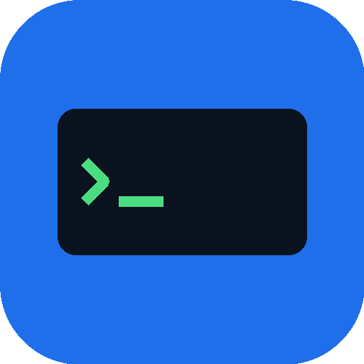
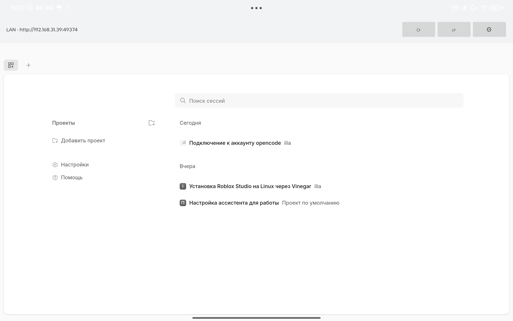
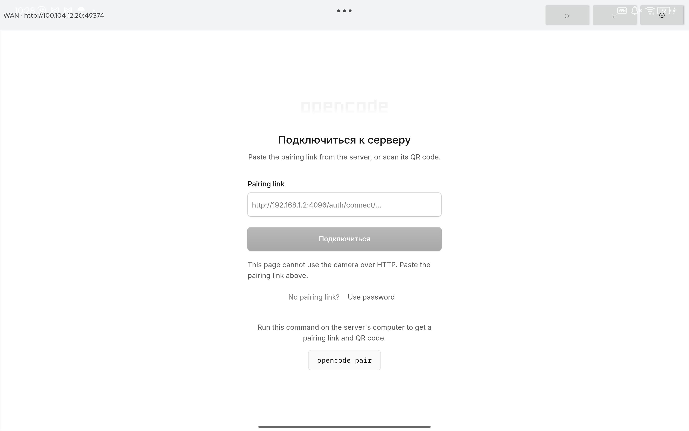

Android-клиент для OpenCode, работающего на вашем компьютере. Локальная сеть и интернет через Tailscale — с автоматическим переключением.
Файл подписан: CN=CodeTether · все релизы
curl -fsSL https://raw.githubusercontent.com/frantishak0/codetether/main/scripts/setup-server.sh | bashWindows:
powershell -ExecutionPolicy Bypass -File .\scripts\setup-server.ps1
Наведите камеру телефона, чтобы скачать APK
Параллельная проверка обоих адресов: локальная сеть в приоритете, при её потере — мгновенный уход на Tailscale.
Скрипт настройки печатает код с адресами и паролем. Одно сканирование — и всё готово.
Приложение само проверяет новые релизы и предлагает обновиться.
Все сессии, проекты и инструменты OpenCode — как в браузере, но в удобном приложении.
Прикрепляйте файлы к сообщениям прямо из системы Android.
Без аналитики и рекламы. Пароль хранится в EncryptedSharedPreferences, соединения идут только к вашему серверу.
[Android] ──LAN──────▶ http://192.168.x.x:49374
│ │
└────Tailscale──▶ http://100.x.y.z:49374
▼
opencode serve (ваш компьютер)
| Платформа сервера | Порт по умолчанию | Скрипт настройки |
|---|---|---|
| Linux / macOS | 49374 | setup-server.sh |
| Windows | 28894 | setup-server.ps1 |
| WSL2 | 49374 | bash-скрипт + portproxy / mirrored networking |
OpenCode внутри WSL2 сидит за NAT — телефон его не увидит напрямую.
Включите networkingMode=mirrored в .wslconfig или пробросьте порт через
netsh interface portproxy. Подробности — в
README.


Kotlin, WebView-клиент. Сборка: ./gradlew assembleRelease
Установка сервера, Tailscale, Windows и WSL2.
Данные не покидают ваши устройства. Лицензия MIT.